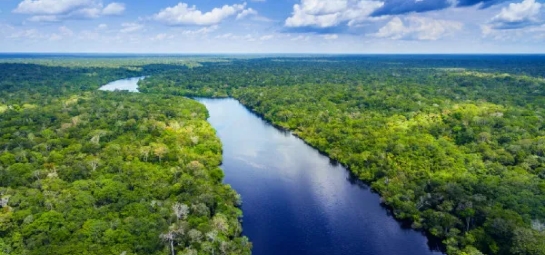

Domínios morfoclimáticos
Domínio morfoclimático é uma classificação geográfica que engloba aspectos naturais como clima, hidrografia, vegetação, relevo e solo, predominantes em uma determinada área, e a forma como eles se relacionam entre si.
Domínio morfoclimático amazônico
O Domínio morfoclimático amazônico é o maior do Brasil, e está praticamente todo localizado na Região Norte do país, com cerca de cinco milhões de km², e recebe a nomenclatura de terras baixas florestadas equatoriais.
Relevo

